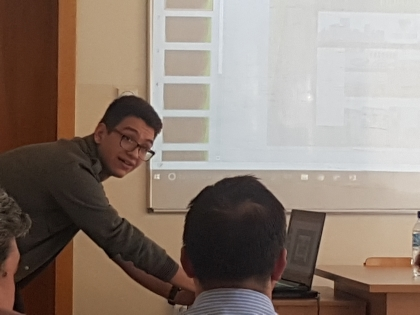
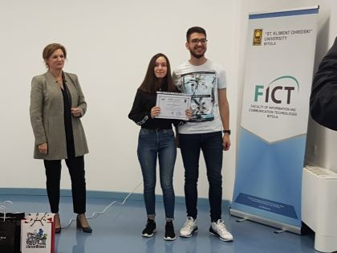

Повеќе за мене:Jас сум Александар Тркалески. Роден сум во Прилеп, Македонија и моментално сум студент на Факултетот за информатички науки и компјутерско инженерство. Завршив средно образование во гиманзија Мирче Ацев на природно математичкиот смер комбинација а и тоа на некој начин ме наведе/инспирираше да се посветам на информатиката и технологијата. Во 2018тата и 2019тата година учествував на натпреварот CodeCup организиран од Факултетот за информатички и комуникациски технологии каде првиот пат учествував сам додека вториот пат учествував тимски со еден од моите соученици. Веќе тука научив дека тимската работа игра огромна улога за успех, надоградба и споделувања искуства кои би ми помогнале во понатамошниот развој. |
|  |  |